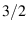

Common command line options for mesh manipulation executables
All of the GRUMMP mesh generation, improvement, and coarsening executables
share a number of command-line options in common.
- [-i basefilename] This argument is mandatory and
specifies the stem of the mesh file name; both relative and absolute
path names are acceptable. Extensions will be added to this stem as
appropriate for mesh input and output, quality file output (.qual),
and message output (.msg). For example, the message output
file will be basefilename.msg. Because basefilename
is used in its entirety, all output files will be in the same directory
as the input file.
For tri and tetra, the default input file extension
is .bdry; these files specify the boundary of the domain
to be meshed in terms of its underlying geometry. See Sections 3.1
and 3.3 for information on the format of these files.
The output file format and extensions for all the GRUMMP meshing executables
are user-definable. In particular, it is possible to write node locations
in one file and connectivity in another, or any other combination
of dividing information between files. This capability allows the
programs to exchange data with any other preprocessor or analysis
software that uses ASCII files for mesh data. A full description of
how to use this feature of GRUMMP can be found in Section 3.2.
The mesh modification executables (meshopt[23]d and coarsen[23]d)
append .out to the output file names they would otherwise
use to prevent possible file name collisions with input files.
In addition to writing output in a wide range of file formats, meshopt2d
and coarsen2d can read any file format that they can write.2.1
- [-A arg] If the argument is non-zero, use Jonathan Shewchuk's
adaptive geometric predicates to evaluate orientation and in-ball
primitives. These predicates are carefully designed to be extremely
efficient, so there is not a large performance penalty for using them.
On the other hand, my experience is that there is little benefit in
terms of robustness to using these predicates. There may, however,
be cases where this helps, so feel free to try this option in difficult
cases. Default: 0.
- [-b arg] If the argument is non-zero, the boundary of
the mesh is treated as precious: no points are inserted on the boundary,
boundary points are not moved by smoothing, and local reconnection
in three dimensions does not change boundary connectivity. Notwithstanding,
tetra will insert points on the boundary if necessary to
create a constrained tetrahedralization. Use of this argument
is not recommended, because it can severely degrade mesh quality!
Default: boundary is changeable.
- [-q arg] Specify a cell quality measure to be evaluated;
the quality data is binned for use in producing histograms; the maximum
and minimum quality measures are also retained for each evaluation.
Five quality measures are supported in two dimensions, and ten in
three dimensions. Note that this option affects output only: no effort
is made to optimize using the selected measure.
For each measure, the accompanying table shows the minimum and maximum
attainable values, along with the number of bins and range which those
bins cover; the latter is more than the attainable range for angle
measures. Default: 2 (all angles [dihedrals in 3D]).
- Maximum/minimum/all angles
- in the cell (both solid
and dihedral angles are available in three dimensions).
- Marcum's sliver measure [3D].
- This measure takes the ratio
of tetrahedron volume to the cube of the mean edge length, with normalization
so that an equilateral tetrahedron has quality 1. The measure is designed
to have low values for slivers, tetrahedra which have both
very large and very small dihedral angles.
- Marcum's skewness measure. [3D]
- This measure takes the
ratio of volume to the cube of the circumradius of a tetrahedron;
again, normalization makes quality equal to 1 for an equilateral tetrahedron.
This measure is designed to detect skewed tetrahedra. For more information
on these last two quality measures, see [4].
- Aspect ratio I,
- the ratio of inscribed circle (sphere) radius
to circumcircle (sphere) radius, with a constant multiplier included
so that an equilateral cell has quality 1. A degenerate cell has quality
0 according to this measure.
- Aspect ratio II,
- the ratio of area of the triangle (volume
of tetrahedron) to perimeter squared (surface area to the

).
Again a constant multiplier is used so that an equilateral cell has
quality 1 and a degenerate cell has quality 0.
- Shortest edge to circumradius,
- the ratio of the shortest edge
length to the circumradius of the cell. This is the quality measure
that Jonathan Shewchuk's scheme guarantees to produce excellent values
for, and is used during 3D insertion. A shortcoming of this measure
is that 3D slivers, which are bad cells, can have high values of short-edge
to circumradius ratio. This measure is normalized so that a perfect
cell has quality of 1 and most degenerate cells have quality 0.
| Measure |
arg |
Min value |
Max value |
Bins |
Min bin |
Max bin
Max angle (2D) |